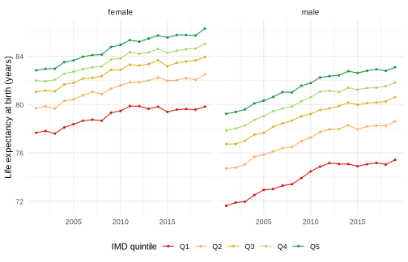
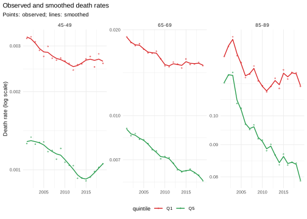
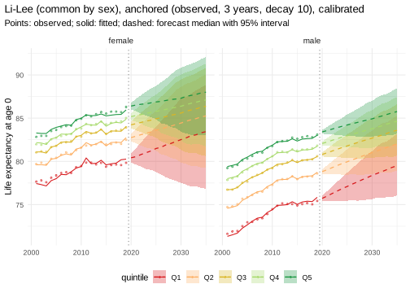
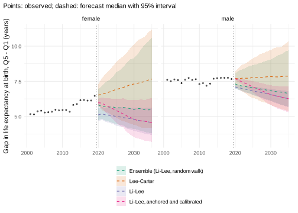

This vignette is precomputed
(dev/precompute-vignettes.R) because its backtests take a
few minutes.
Forecasts of mortality by deprivation answer two questions at once: how mortality will develop in each group, and how the gaps between the groups will develop. The second question depends strongly on the model, because each model makes an assumption about the gaps. This vignette forecasts mortality in England by sex and quintile of the Index of Multiple Deprivation (IMD) and works through the choices:
- what the observed data say about the gaps;
- what the models assume about them, and how they forecast each quintile in backtests;
- how the forecast intervals can be calibrated on the last ten years;
- whether smoothing the rates over time helps, and how the forecast starts from the last observed year (the jump-off);
- forecasts of life expectancy, of the gap and of the slope index of inequality, and their sensitivity to the model and the fitting period.
Data
ons_data holds deaths and mid-year populations by sex,
5-year age group and IMD decile, England 2001-2019 (Source: Office for
National Statistics licensed under the Open Government Licence v3.0).
Deciles are combined to quintiles; Q1 is the most deprived quintile.
x <- mt_data(deaths = ons_data, population = ons_data, by = c("sex", "imd_decile"), age = "age_group",
value = c(deaths = "all_causes", population = "population"))
x <- mt_as_exposure(x, type = "midyear")
x <- mt_group_levels(x, "imd_decile", function(d) paste0("Q", ceiling(as.numeric(d) / 2)), name = "quintile")
x
#> <mt_data> 10 strata by sex, quintile, omega = 110
#> deaths mixed widths (1,4,5) 0-89, 90+; periods 2001-2019 (width 1); 3800 cells
#> exposure mixed widths (1,4,5) 0-89, 90+; periods 2001-2019 (width 1); 3800 cells
#> population mixed widths (1,4,5) 0-89, 90+; periods 2001-2019 (width 1); 3800 cells
#> grid <mt_axis: age, 20 intervals> 0 1-4 5-9 10-14 ... 80-84 85-89 90+
#> <mt_axis: period, 19 intervals> 2001 2002 2003 2004 ... 2017 2018 2019The deciles follow the IMD version current at the time of registration (2004, 2007, 2010, 2015 and 2019), so areas change quintile during the period. Gaps between quintiles therefore compare the most and least deprived areas of each year, which is the usual target of monitoring.
The past
Life expectancy at birth, with intervals for the Poisson variation of the deaths:
e0 <- life_expectancy(x)
dcast(e0[period %in% c(2001, 2011, 2019), .(sex, quintile, period, e0 = round(q0.5, 1))],
sex + quintile ~ period, value.var = "e0")
#> sex quintile 2001 2011 2019
#> 1: female Q1 77.7 79.9 79.8
#> 2: female Q2 79.7 81.8 82.5
#> 3: female Q3 81.0 83.3 83.9
#> 4: female Q4 82.0 84.3 85.0
#> 5: female Q5 82.8 85.3 86.3
#> 6: male Q1 71.6 74.9 75.4
#> 7: male Q2 74.7 77.7 78.6
#> 8: male Q3 76.7 79.6 80.6
#> 9: male Q4 77.9 81.1 81.8
#> 10: male Q5 79.2 82.2 83.1
ggplot(e0, aes(period, q0.5, colour = quintile)) +
geom_line() +
geom_point(size = 0.8) +
facet_wrap(~ sex) +
scale_colour_mortensor() +
labs(x = NULL, y = "Life expectancy at birth (years)", colour = "IMD quintile") +
theme_mortensor()
Until 2011, life expectancy rose in every quintile. From 2011 to 2019 it rose by about one year in the least deprived quintile and stayed almost constant in the most deprived quintile of women. The annual decline of the age-standardised death rate (European Standard Population 2013) shows the same break (per cent per year):
a <- asr(x)
a[, .(decline_2001_2011 = round(100 * (1 - (q0.5[period == 2011] / q0.5[period == 2001])^(1 / 10)), 2),
decline_2011_2019 = round(100 * (1 - (q0.5[period == 2019] / q0.5[period == 2011])^(1 / 8)), 2)),
by = .(sex, quintile)]
#> sex quintile decline_2001_2011 decline_2011_2019
#> 1: female Q1 1.57 -0.18
#> 2: female Q2 1.80 0.62
#> 3: female Q3 2.18 0.74
#> 4: female Q4 2.27 0.85
#> 5: female Q5 2.50 1.25
#> 6: male Q1 2.17 0.45
#> 7: male Q2 2.42 0.82
#> 8: male Q3 2.48 1.18
#> 9: male Q4 2.87 0.84
#> 10: male Q5 2.82 1.11The gap between the extreme quintiles uses only Q1 and Q5; the slope index of inequality (SII) uses all quintiles, weighted by their populations, and gives the difference in life expectancy between the bottom and the top of the deprivation scale. Both are computed path by path. The female gap widened from 5.2 to 6.5 years, most of it after 2011; the male gap stayed near 7.5 years:
gap <- mt_contrast(x, var = "quintile", ref = "Q1")[level == "Q5"]
sii <- mt_inequality(x, "quintile", order = paste0("Q", 1:5), quantity = "life_expectancy")[index == "sii"]
tab <- rbind(gap[, .(measure = "gap Q5 - Q1", sex, period, q0.025, q0.5, q0.975)],
sii[, .(measure = "SII", sex, period, q0.025, q0.5, q0.975)])
tab[period %in% c(2001, 2011, 2019)][, c("q0.025", "q0.5", "q0.975") := lapply(.SD, round, 2),
.SDcols = c("q0.025", "q0.5", "q0.975")][]
#> measure sex period q0.025 q0.5 q0.975
#> 1: gap Q5 - Q1 female 2001 5.01 5.17 5.33
#> 2: gap Q5 - Q1 female 2011 5.31 5.46 5.62
#> 3: gap Q5 - Q1 female 2019 6.31 6.46 6.63
#> 4: gap Q5 - Q1 male 2001 7.44 7.60 7.78
#> 5: gap Q5 - Q1 male 2011 7.20 7.37 7.54
#> 6: gap Q5 - Q1 male 2019 7.50 7.66 7.83
#> 7: SII female 2001 6.15 6.33 6.51
#> 8: SII female 2011 6.55 6.72 6.91
#> 9: SII female 2019 7.53 7.70 7.87
#> 10: SII male 2001 9.00 9.19 9.39
#> 11: SII male 2011 8.88 9.07 9.26
#> 12: SII male 2019 9.05 9.24 9.43The relative excess mortality of Q1 over Q5 is largest in mid-life and has grown at ages 60 to 84:
ages <- c("40-44", "50-54", "60-64", "70-74", "80-84", "90+")
rr <- rbindlist(lapply(ages, function(a) {
mt_contrast(x, var = "quintile", ref = "Q5", quantity = "rate", type = "ratio", age = a)[
level == "Q1" & period %in% c(2001, 2019)][, age := a]
}))
dcast(rr[, .(age, sex, period, ratio = round(q0.5, 2))], age ~ sex + period, value.var = "ratio")
#> age female_2001 female_2019 male_2001 male_2019
#> 1: 40-44 2.38 2.82 3.62 3.28
#> 2: 50-54 2.31 2.42 3.01 3.07
#> 3: 60-64 2.02 2.65 2.35 2.61
#> 4: 70-74 1.87 2.32 1.84 2.28
#> 5: 80-84 1.27 1.73 1.30 1.60
#> 6: 90+ 0.99 1.18 1.01 1.14What the models assume about the gaps
-
lee_carter()per stratum: each quintile follows its own trend. Gaps change linearly on the log scale, so the widening of the last years continues if it dominates the fitting period. -
li_lee(common_by = "sex"): the quintiles of each sex share a common trend; their deviations from it follow stationary processes. Gaps return towards their average in the fitting period. -
rwd(observation_noise = TRUE): a random walk with drift per age and quintile, the benchmark of no structure. -
ensemble(): a mixture; its intervals cover the disagreement between the components.
Backtests by quintile
Forecasts from the origins 2008 to 2014, five years ahead, scored against the observed deaths:
specs <- list(lee_carter(), li_lee(common_by = "sex"), rwd(observation_noise = TRUE),
ensemble(lc = lee_carter(), rw = rwd()),
ensemble(ll = li_lee(common_by = "sex"), rw = rwd(observation_noise = TRUE)))
bt <- rbindlist(lapply(specs, function(sp) mt_backtest(sp, x, origins = 2008:2014, h = 5, n_draws = 200)))
rnd <- function(d) {
num <- names(d)[vapply(d, is.numeric, logical(1))]
d[, (num) := lapply(.SD, round, 4), .SDcols = num][]
}
rnd(mt_score(bt, by = "model")[, .(model, crps, mae, cov80, cov95, pit_mean)])
#> model crps mae cov80 cov95 pit_mean
#> 1: Lee-Carter 0.0678 0.0940 0.6540 0.8290 0.5552
#> 2: Li-Lee (common by sex) 0.0666 0.0927 0.6731 0.8467 0.5586
#> 3: Random walk with drift plus noise 0.0761 0.1045 0.6317 0.8073 0.5947
#> 4: Ensemble (lc, rw) 0.0703 0.0963 0.7839 0.9294 0.5663
#> 5: Ensemble (ll, rw) 0.0666 0.0933 0.7176 0.8899 0.5776
sq <- mt_score(bt, by = c("model", "quintile"))
rnd(dcast(sq, model ~ quintile, value.var = "crps"))
#> model Q1 Q2 Q3 Q4 Q5
#> 1: Ensemble (lc, rw) 0.0636 0.0697 0.0697 0.0739 0.0746
#> 2: Ensemble (ll, rw) 0.0649 0.0649 0.0669 0.0684 0.0678
#> 3: Lee-Carter 0.0619 0.0681 0.0651 0.0699 0.0739
#> 4: Li-Lee (common by sex) 0.0728 0.0639 0.0633 0.0670 0.0660
#> 5: Random walk with drift plus noise 0.0682 0.0741 0.0795 0.0798 0.0789
rnd(dcast(sq, model ~ quintile, value.var = "cov95"))
#> model Q1 Q2 Q3 Q4 Q5
#> 1: Ensemble (lc, rw) 0.9171 0.9314 0.9400 0.9200 0.9386
#> 2: Ensemble (ll, rw) 0.8536 0.8707 0.8936 0.9057 0.9257
#> 3: Lee-Carter 0.8000 0.8200 0.8357 0.8314 0.8579
#> 4: Li-Lee (common by sex) 0.7457 0.8386 0.8593 0.8921 0.8979
#> 5: Random walk with drift plus noise 0.8064 0.7993 0.8086 0.8014 0.8207Li-Lee and its mixture with the random walk are the most accurate
models overall, and Li-Lee is the least accurate in Q1: its common trend
carries the improvement of the other quintiles into Q1, where mortality
stopped improving after 2011. Lee-Carter per quintile is the most
accurate model for Q1. A pit_mean above 0.5 means that
observed rates were higher than the forecasts on average, the signature
of the slowdown. The mixtures are closest to nominal coverage.
Calibration on the last ten years
calibrated() refits a model at several origins in the
last years of the training data, compares its forecasts
with the observed rates of that window, and rescales the spread of the
draws (here with a separate factor per quintile,
by = "quintile"). The factors
depend on the horizon
:
fit_cal <- mt_fit(calibrated(li_lee(common_by = "sex"), years = 10, by = "quintile"), x)
rnd(fit_cal$calibration[, .(group, scale_h1, slope, crps_before, crps_after, cov95_before, cov95_after)])
#> group scale_h1 slope crps_before crps_after cov95_before cov95_after
#> 1: all 0.7801 0.3171 0.0732 0.0725 0.8405 0.8812
#> 2: Q1 1.0313 0.3176 0.0802 0.0776 0.7400 0.8692
#> 3: Q2 0.6217 0.4336 0.0705 0.0699 0.8292 0.8692
#> 4: Q3 0.8260 0.2333 0.0687 0.0682 0.8533 0.8858
#> 5: Q4 0.6671 0.3330 0.0726 0.0723 0.8792 0.8975
#> 6: Q5 1.0233 0.0155 0.0731 0.0731 0.8958 0.9025In the window 2010-2019, Li-Lee covered 74% of the Q1 observations with its 95% intervals; the calibrated draws cover 87%. A spread factor below 1 at horizon 1 with a positive slope narrows short-term intervals and widens long-term ones; beyond horizon 10, the longest horizon of the window, the factor stays constant.
Separate factors per quintile scale the common trend of Li-Lee differently in each quintile, so it no longer cancels in the gaps between quintiles, and their intervals widen. For forecasts of gaps, the pooled calibration (one factor for all strata) is used below.
The window starts in 2010 because the data start in 2001 and the model needs eight years. To check calibration out of sample, it is nested in a backtest; each outer origin has fewer training years, so the window is shorter here (five years, origins 2013 and 2014):
cal_specs <- list(li_lee(common_by = "sex"),
calibrated(li_lee(common_by = "sex"), years = 5, n_origins = 3),
calibrated(li_lee(common_by = "sex"), years = 5, n_origins = 3, by = "quintile"),
ensemble(ll = li_lee(common_by = "sex"), rw = rwd(observation_noise = TRUE)),
calibrated(ensemble(ll = li_lee(common_by = "sex"), rw = rwd(observation_noise = TRUE)),
years = 5, n_origins = 3))
bc <- rbindlist(lapply(cal_specs, function(sp) mt_backtest(sp, x, origins = 2013:2014, h = 5, n_draws = 200)))
rnd(mt_score(bc, by = "model")[, .(model, crps, cov80, cov95)])
#> model crps cov80 cov95
#> 1: Li-Lee (common by sex) 0.0719 0.6380 0.8180
#> 2: Li-Lee (common by sex), calibrated 0.0717 0.6435 0.8225
#> 3: Li-Lee (common by sex), calibrated by quintile 0.0716 0.6395 0.8260
#> 4: Ensemble (ll, rw) 0.0715 0.6740 0.8640
#> 5: Ensemble (ll, rw), calibrated 0.0709 0.6690 0.8495
rnd(dcast(mt_score(bc, by = c("model", "quintile")), model ~ quintile, value.var = "cov95"))
#> model Q1 Q2 Q3 Q4
#> 1: Ensemble (ll, rw) 0.8175 0.8525 0.8525 0.8925
#> 2: Ensemble (ll, rw), calibrated 0.7950 0.8350 0.8375 0.8750
#> 3: Li-Lee (common by sex) 0.6900 0.8100 0.8250 0.8800
#> 4: Li-Lee (common by sex), calibrated 0.6950 0.8250 0.8225 0.8850
#> 5: Li-Lee (common by sex), calibrated by quintile 0.7750 0.8200 0.8000 0.8675
#> Q5
#> 1: 0.9050
#> 2: 0.9050
#> 3: 0.8850
#> 4: 0.8850
#> 5: 0.8675Calibration by quintile raised the 95% coverage of Li-Lee in Q1,
where it was too narrow, and the pooled calibration changed little; the
ensemble was narrowed slightly. Calibration helps where a model is too
narrow in a way that persists, and it cannot anticipate changes after
the window. With two outer origins these differences are small and
uncertain; the help page of calibrated() summarises longer
backtests on HMD data, where calibration raised the 95% coverage of
Lee-Carter from 0.75 to 0.88.
Smoothing and the jump-off
Two choices concern the last observed years. Smoothing the rates over
time before fitting removes year-to-year noise from the training data;
the forecast then starts from a smooth level.
mt_smooth_check() shows how far a smoother moves the
data:
xs <- mt_smooth(x, along = "period", method = "whittaker")
rnd(mt_smooth_check(x, xs)[, .(label, mad_log, dispersion, trend_ratio)])
#> label mad_log dispersion trend_ratio
#> 1: female.Q1 0.0120 0.5287 0.2370
#> 2: female.Q2 0.0114 0.4244 0.2679
#> 3: female.Q3 0.0087 0.3800 0.2869
#> 4: female.Q4 0.0166 0.5353 0.2219
#> 5: female.Q5 0.0145 0.4821 0.2319
#> 6: male.Q1 0.0147 0.9880 0.1773
#> 7: male.Q2 0.0165 0.9682 0.1589
#> 8: male.Q3 0.0196 0.9837 0.1206
#> 9: male.Q4 0.0170 0.7134 0.1958
#> 10: male.Q5 0.0176 0.6753 0.1626The smoothed rates differ from the observed ones by a median of 1-2%
(mad_log). The mean squared Pearson residual of the
observed deaths around the smoothed ones (dispersion) would
be about 1 if the smoother removed exactly the Poisson noise; it is 0.4
to 1.0, so the smoother follows part of the noise and removes no visible
signal: the smoothing is mild. Even so, the year-to-year changes of the
smoothed rates have only 12% to 29% of the variance of the observed
changes (trend_ratio), and that is what narrows the
intervals of models with a period index (below).
mt_plot_smooth(x, xs, ages = c("45-49", "65-69", "85-89"), strata = c("female.Q1", "female.Q5"))
Li-Lee starts its forecasts from the fitted rates of 2019, which
differ from the observed ones, and its deviations from the common trend
begin to return towards their mean in the first forecast year.
mt_jump_off() reports the step from the last observed year
to the median of the first forecast year; anchored() moves
the start towards the observed level of the last three years, with the
offsets fading out over ten years:
fc_ll <- mt_forecast(mt_fit(li_lee(common_by = "sex"), x), h = 5, n_draws = 500, seed = 1)
fc_an <- mt_forecast(mt_fit(anchored(li_lee(common_by = "sex"), years = 3), x), h = 5, n_draws = 500, seed = 1)
rnd(merge(mt_jump_off(fc_ll)[, .(label, observed, fitted, li_lee = forecast)],
mt_jump_off(fc_an)[, .(label, anchored = forecast)], by = "label", sort = FALSE))
#> label observed fitted li_lee anchored
#> 1: female.Q1 79.8332 80.2616 80.8909 80.3919
#> 2: female.Q2 82.4987 82.7431 82.8888 82.7158
#> 3: female.Q3 83.9315 84.0149 84.1699 84.2042
#> 4: female.Q4 85.0173 84.8781 85.0373 85.1573
#> 5: female.Q5 86.2951 85.9539 86.0079 86.3666
#> 6: male.Q1 75.4307 75.8441 76.1210 75.7482
#> 7: male.Q2 78.5978 78.7380 78.9657 78.8289
#> 8: male.Q3 80.6050 80.5609 80.7945 80.8193
#> 9: male.Q4 81.8200 81.7528 81.9753 82.0868
#> 10: male.Q5 83.0900 83.0188 83.2118 83.4264For women in Q1, life expectancy in the first forecast year (2020) lies 1.1 years above the observed value of 2019 under Li-Lee: 0.4 years come from the fit of 2019, the rest from one year of forecast. Anchored, the step is 0.6 years; in the other strata it is 0.1 to 0.3 years, about one year of improvement.
Backtests from the origins 2008 to 2014 compare the options for the
rates and for life expectancy at birth (quantities):
ll <- li_lee(common_by = "sex")
smooth_t <- mt_prep(step_smooth(along = "period", method = "whittaker"))
variants <- list("Li-Lee" = list(ll, NULL),
"Li-Lee, anchored" = list(anchored(ll, years = 3), NULL),
"Li-Lee, observed jump-off" = list(li_lee(common_by = "sex", jump_off = "observed"), NULL),
"Li-Lee, smoothed over time" = list(ll, smooth_t))
bj <- rbindlist(lapply(names(variants), function(n) {
mt_backtest(variants[[n]][[1]], x, origins = 2008:2014, h = 5, n_draws = 200, prep = variants[[n]][[2]],
quantities = "life_expectancy")[, model := n]
}))
rnd(merge(mt_score(bj)[, .(model, crps, cov95)],
mt_score(bj, target = "life_expectancy")[, .(model, crps_e0 = crps, cov95_e0 = cov95)],
by = "model", sort = FALSE))
#> model crps cov95 crps_e0 cov95_e0
#> 1: Li-Lee 0.0666 0.8467 0.3356 0.8114
#> 2: Li-Lee, anchored 0.0654 0.8589 0.3149 0.8629
#> 3: Li-Lee, observed jump-off 0.0709 0.8480 0.3151 0.8257
#> 4: Li-Lee, smoothed over time 0.0669 0.7736 0.3482 0.6057
rnd(dcast(mt_score(bj, by = c("model", "quintile"), target = "life_expectancy"), model ~ quintile,
value.var = "crps"))
#> model Q1 Q2 Q3 Q4 Q5
#> 1: Li-Lee 0.5835 0.3475 0.2889 0.2580 0.2002
#> 2: Li-Lee, anchored 0.5061 0.3090 0.2752 0.2741 0.2099
#> 3: Li-Lee, observed jump-off 0.4787 0.3205 0.2710 0.2797 0.2256
#> 4: Li-Lee, smoothed over time 0.5586 0.3630 0.3092 0.3074 0.2030crps_e0 is in years of life expectancy at birth.
Anchoring improved the rates slightly and life expectancy more, most of
all in Q1, where the step of Li-Lee is largest (Q4 and Q5 became
slightly worse). The observed jump-off of one year forecast life
expectancy about as well, but the rates worse: it carries the noise of
single ages in the last year into the forecast. Smoothing over time did
not improve the forecasts here and narrowed the intervals: the smoothed
period index varies less from year to year, so its random walk is
narrower, and the 95% coverage of life expectancy fell from 0.81 to
0.61. With noise of the order of Poisson variation, as in these data,
smoothing over time has little to remove. It is more useful for sparse
data (causes of death, small areas), and then with
calibrated() on top, which restores part of the
coverage:
bsc <- rbindlist(list(
mt_backtest(ll, x, origins = 2013:2014, h = 5, n_draws = 200, prep = smooth_t)[, model := "smoothed"],
mt_backtest(calibrated(ll, years = 5, n_origins = 3), x, origins = 2013:2014, h = 5, n_draws = 200,
prep = smooth_t)[, model := "smoothed + calibrated"]))
rnd(mt_score(bsc)[, .(model, crps, cov80, cov95)])
#> model crps cov80 cov95
#> 1: smoothed 0.0734 0.5605 0.7415
#> 2: smoothed + calibrated 0.0723 0.6125 0.7865Forecasts to 2035
Four forecasts, which differ in their assumption about the gaps and in where they start:
final <- list("Lee-Carter" = lee_carter(),
"Li-Lee" = li_lee(common_by = "sex"),
"Li-Lee, anchored and calibrated" = calibrated(anchored(li_lee(common_by = "sex")), years = 10),
"Ensemble (Li-Lee, random walk)" = ensemble(ll = li_lee(common_by = "sex"),
rw = rwd(observation_noise = TRUE)))
fcs <- lapply(final, function(sp) mt_forecast(mt_fit(sp, x), to = 2035, n_draws = 1000, seed = 1))
e0_fc <- rbindlist(lapply(names(fcs), function(n) life_expectancy(fcs[[n]])[, model := n]))
dcast(e0_fc[period == 2035, .(model, sex, quintile, e0 = round(q0.5, 1))], model + sex ~ quintile,
value.var = "e0")
#> model sex Q1 Q2 Q3 Q4 Q5
#> 1: Ensemble (Li-Lee, random walk) female 82.1 84.8 86.3 87.3 88.6
#> 2: Ensemble (Li-Lee, random walk) male 78.8 81.9 83.7 84.8 86.0
#> 3: Lee-Carter female 81.5 84.6 86.4 87.5 89.1
#> 4: Lee-Carter male 78.5 81.7 83.8 85.0 86.3
#> 5: Li-Lee female 83.4 85.3 86.4 87.1 88.0
#> 6: Li-Lee male 79.5 82.0 83.6 84.6 85.8
#> 7: Li-Lee, anchored and calibrated female 83.4 85.3 86.4 87.1 88.0
#> 8: Li-Lee, anchored and calibrated male 79.5 82.0 83.6 84.6 85.8
mt_plot_life_expectancy(fcs[["Li-Lee, anchored and calibrated"]], facet = "sex", data = x)
The gap between Q5 and Q1 and the SII, with 95% intervals:
gaps <- rbindlist(lapply(names(fcs), function(n) {
rbind(mt_contrast(fcs[[n]], var = "quintile", ref = "Q1")[level == "Q5"][, measure := "gap Q5 - Q1"],
mt_inequality(fcs[[n]], "quintile", order = paste0("Q", 1:5),
quantity = "life_expectancy")[index == "sii"][, measure := "SII"],
fill = TRUE)[, model := n]
}))
gaps[period == 2035, .(measure, model, sex, q0.025 = round(q0.025, 1), q0.5 = round(q0.5, 1),
q0.975 = round(q0.975, 1))][order(measure, sex)]
#> measure model sex q0.025 q0.5 q0.975
#> 1: SII Lee-Carter female 5.2 9.1 12.9
#> 2: SII Li-Lee female 4.4 5.5 6.7
#> 3: SII Li-Lee, anchored and calibrated female 3.8 5.5 7.5
#> 4: SII Ensemble (Li-Lee, random walk) female 4.6 6.5 12.0
#> 5: SII Lee-Carter male 6.5 9.4 12.2
#> 6: SII Li-Lee male 6.8 7.5 8.2
#> 7: SII Li-Lee, anchored and calibrated male 6.3 7.6 8.6
#> 8: SII Ensemble (Li-Lee, random walk) male 6.8 8.0 11.5
#> 9: gap Q5 - Q1 Lee-Carter female 4.2 7.7 11.2
#> 10: gap Q5 - Q1 Li-Lee female 3.7 4.6 5.6
#> 11: gap Q5 - Q1 Li-Lee, anchored and calibrated female 3.2 4.6 6.3
#> 12: gap Q5 - Q1 Ensemble (Li-Lee, random walk) female 3.8 5.5 10.6
#> 13: gap Q5 - Q1 Lee-Carter male 5.4 7.9 10.4
#> 14: gap Q5 - Q1 Li-Lee male 5.6 6.3 6.8
#> 15: gap Q5 - Q1 Li-Lee, anchored and calibrated male 5.3 6.3 7.1
#> 16: gap Q5 - Q1 Ensemble (Li-Lee, random walk) male 5.7 6.6 9.7
obs_gap <- gap[, .(period, sex, q0.5)]
ggplot(gaps[measure == "gap Q5 - Q1"], aes(period)) +
geom_ribbon(aes(ymin = q0.025, ymax = q0.975, fill = model), alpha = 0.15) +
geom_line(aes(y = q0.5, colour = model), linetype = "dashed") +
geom_point(data = obs_gap, aes(y = q0.5), size = 0.8, alpha = 0.6) +
geom_vline(xintercept = 2019.5, linetype = "dotted", colour = "grey50") +
facet_wrap(~ sex) +
scale_colour_mortensor(type = "categorical") +
scale_fill_mortensor(type = "categorical") +
labs(x = NULL, y = "Gap in life expectancy at birth, Q5 - Q1 (years)", colour = NULL, fill = NULL,
subtitle = "Points: observed; dashed: forecast median with 95% interval") +
theme_mortensor() +
theme(legend.direction = "vertical")
Lee-Carter extrapolates the quintile-specific trends of 2001-2019, so
the female gap keeps widening, with wide intervals (and in 0.1% of its
draws the rates of women in Q1 at 90+ exceed 1 by 2035, as
mt_forecast() warns). Li-Lee forecasts a female gap below
the observed gap of 2019: its deviations from the common trend return
towards zero, and its forecasts start from the fitted rates of 2019,
which for women give a life expectancy 0.4 years above the observed one
in Q1 and 0.3 years below it in Q5, so the forecast gap starts about 0.8
years below the observed gap. Anchored, Li-Lee starts closer to the
observed gap and joins the medians of Li-Lee once the offsets have faded
(after ten years, so the values of 2035 agree); the calibration widens
its intervals. The mixture lies between Lee-Carter and Li-Lee.
Sensitivity to the fitting period
The break around 2011 makes the fitting period a decision. Fitting on 2011-2019 only describes the recent trends:
x11 <- mt_subset(x, periods = c(2011, NA))
recent <- lapply(final[c("Lee-Carter", "Li-Lee")], function(sp) {
mt_forecast(mt_fit(sp, x11), to = 2035, n_draws = 1000, seed = 1)
})
#> Warning in check_draws_plausible(arr, fit$age, fit$strata, spec$label):
#> Lee-Carter: forecast death rates above 1 in 0.1% of the draws (strata
#> female.Q1; ages 90+). The model is unstable here, often because of sparse
#> counts or a steep trend extrapolated far ahead; consider wider age groups
#> (mt_regroup()), pooling (li_lee(common_by = )), smoothing (step_smooth()) or an
#> ensemble.
e0_recent <- rbindlist(lapply(names(recent), function(n) life_expectancy(recent[[n]])[, model := n]))
rbind(e0_fc[period == 2035 & model %in% names(recent)][, fitted := "2001-2019"],
e0_recent[period == 2035][, fitted := "2011-2019"])[
quintile %in% c("Q1", "Q5"), .(model, fitted, sex, quintile, q0.025 = round(q0.025, 1),
q0.5 = round(q0.5, 1), q0.975 = round(q0.975, 1))][order(model, sex, quintile)]
#> model fitted sex quintile q0.025 q0.5 q0.975
#> 1: Lee-Carter 2001-2019 female Q1 78.5 81.5 84.1
#> 2: Lee-Carter 2011-2019 female Q1 77.0 79.4 83.1
#> 3: Lee-Carter 2001-2019 female Q5 86.7 89.1 91.4
#> 4: Lee-Carter 2011-2019 female Q5 84.2 88.0 91.2
#> 5: Lee-Carter 2001-2019 male Q1 76.5 78.5 80.5
#> 6: Lee-Carter 2011-2019 male Q1 74.5 75.8 76.6
#> 7: Lee-Carter 2001-2019 male Q5 84.8 86.3 87.7
#> 8: Lee-Carter 2011-2019 male Q5 83.1 84.6 85.8
#> 9: Li-Lee 2001-2019 female Q1 79.5 83.4 86.9
#> 10: Li-Lee 2011-2019 female Q1 72.0 81.7 84.1
#> 11: Li-Lee 2001-2019 female Q5 85.1 88.0 90.6
#> 12: Li-Lee 2011-2019 female Q5 80.0 86.9 88.2
#> 13: Li-Lee 2001-2019 male Q1 77.4 79.5 81.8
#> 14: Li-Lee 2011-2019 male Q1 74.6 76.8 78.9
#> 15: Li-Lee 2001-2019 male Q5 84.2 85.8 87.5
#> 16: Li-Lee 2011-2019 male Q5 82.2 84.3 86.2Fitted on 2011-2019, both models forecast lower life expectancy in 2035, most of all in Q1: Lee-Carter for men in Q1 gives 75.8 years (95% interval 74.5 to 76.6) against 78.5 (76.5 to 80.5) when fitted on 2001-2019. The intervals describe the uncertainty given the fitting period; the choice of the period adds uncertainty of its own, here larger than the intervals. With nine years, Li-Lee estimates the deviations of the quintiles poorly, and its intervals become wide and skewed.
Reporting
- The gap forecast follows from the model’s assumption about the gaps; report forecasts of more than one model, or a mixture, and state the fitting period.
- Backtests by quintile show where a model fails; here pooled models fail for the most deprived quintile.
-
calibrated()adjusts the spread to the recent forecast errors; check its effect in an outer backtest. -
mt_jump_off()shows the step from the last observed year into the forecast;anchored()reduces it without carrying the noise of a single year into the forecast. Smoothing over time narrows the intervals and needs a backtest (and usuallycalibrated()) before it is used. - Gaps and indices are computed path by path
(
mt_contrast(),mt_inequality()), so their intervals include the dependence between quintiles.